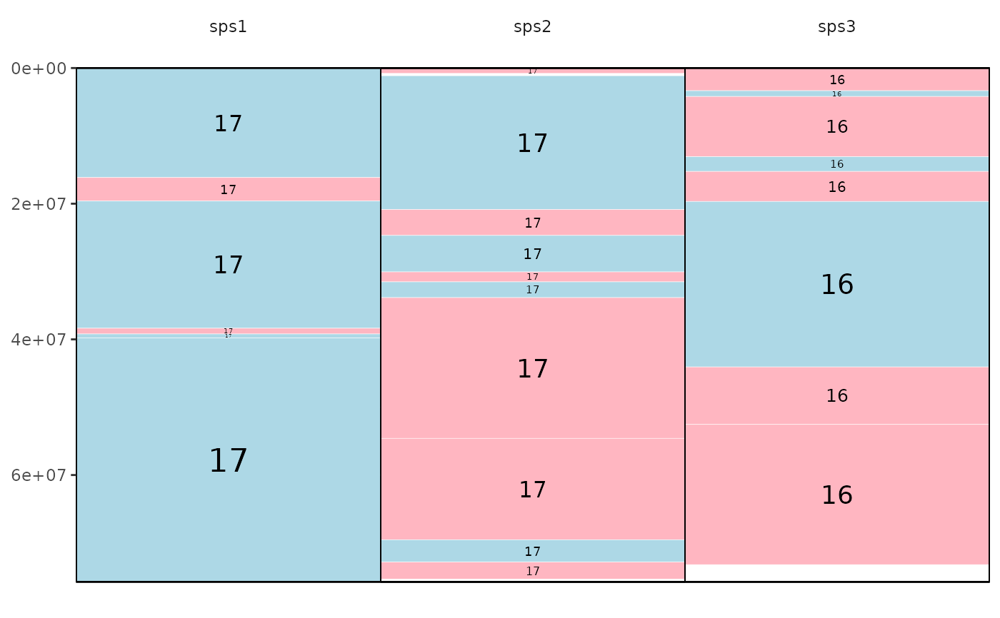
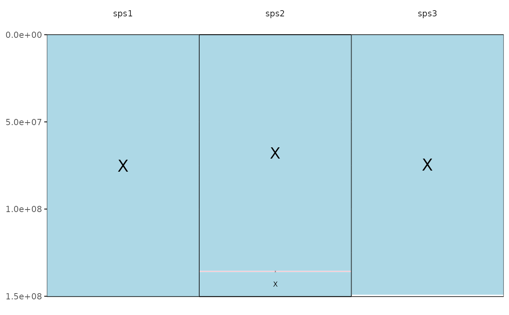

Draw Evolution Highway Plots
Usage
draw.eh(
output,
chrRange,
data_file,
directory = NULL,
fileformat = "png",
colour = "lightblue",
inverted.colour = "lightpink",
w = 5.5,
h = 10,
ps = 10
)Arguments
- output
output file name
- chrRange
range of chromosome numbers in the reference as numbers i.e. 1:29
- data_file
file containing the syntentic blocks from the alignments
- directory
string containing file path to chosen directory to save image file
- fileformat
output file format desired using the format
fileformat = "png"(default is "png")- colour
set colour for non-inverted syntenic blocks using the format
colour = "red"(default is "lightblue")- inverted.colour
set colour for inverted syntenic blocks using the format
inverted.colour = "blue"(default is "lightpink")- w
width of output image using the format
w = 5.5(default)- h
height of output image using the format
h = 10(default)- ps
point size of output image using the format
ps = 10(default)
Details
This function draws Evolution Highway style plots.
It requires as input:
Desired output file name
The range of chromosomes of the reference species this is entered as either a single number i.e. 1 or a range of numbers i.e. 1:22. Note: if you are inputting sex chromosomes or chromosomes with characters in the name input a concatenated string i.e. c(1,2,3,"X")
File containing the syntenic blocks of alignments of one or more target species aligned to a single reference; following this format: reference chromosome, reference start position, reference end position, target chromosome, target start position, target end position, orient, reference species identifier, target species identifier
There are optional parameters for some customization of this function:
The format for saving the image i.e. png or pdf can be altered by inputting:
fileformat = "pdf"(the default value is "png")The colour of the syntenic blocks (not inverted blocks) can be changed by inputting:
colour = "red"(the default value is "lightblue", see Rcolour pallette for colour options)The colour of the inverted syntenic blocks can be changed by inputting:
inverted.colour = "blue"(the default value is "lightpink", see Rcolour pallette for colour options)The width of the image created can be changed by inputting:
w = 5.5The height of the image created can be changed by inputting:
h = 10The point size of the image created can be changed by inputting:
ps = 10The directory where the image file should be saved, as default the image is saved to temporary directory, change by inputting:
directory = "path/to/directory"
The function works creating a graph for each reference chromosome using their start and end positions to create a block for the reference and the target chromosome positions are used to colour the region where synteny was identified
Example: draw.eh("outputName",c(17,"X"), "example_eh_alignments_2.txt", directory = "path/to/directory", fileformat = "pdf")
Examples
# Create object containing file path to external dataset
# (see vignette to follow examples with personal data)
file1 <- system.file("extdata", "example_eh_alignments_2.txt", package = "syntenyPlotteR")
# -----------------------------------------------------------------------------------
# Run draw.eh function
# To run example and save file to working directory
# add directory parameter and set working directory
# To run example with personal data see vignette
draw.eh("outputName", c(17, "X"), file1, fileformat = "pdf")
#> Saving eh image for chromosome 17 to /tmp/Rtmpv2IbI3
#> Saving eh image for chromosome X to /tmp/Rtmpv2IbI3

